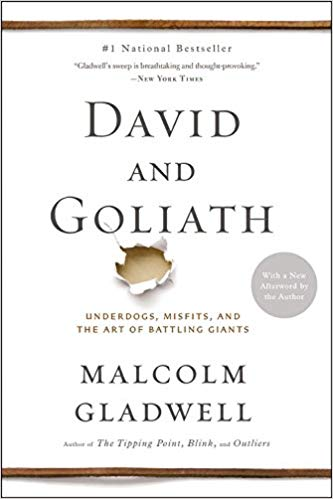

My Favorite Books
Click on the book cover to see amazon link for the book
The Secret of Golf by Joe Posnanski
I love golf, so to me, this was a great read. It has a great format, writing about the epic rivalry between Tom Watson and Jack Nicolas for most of the book, but taking breaks inbetween to give tips to the average golfer that Nickolas and Watson mentioned during their several interviews with the author. This is the one of the three books that have ever made me cry, and I would recommend to any golfer who hasn't read it already.
Outliers By Malcolm Gladwell
This is a great book that challenges the way you think and makes you reconsider what makes people successful. It uses interesting points in history as examples for his theories. It has a lot of good lessons to take away from it, such as how many hours it usually takes to become truly great at something.
David and Goliath By Malcolm Gladwell
This Gladwell book changes how you think of fights and match ups. I takes a deep dive into how “obvious winners” may have weaknesses hidden in there talents, and how “obvious losers” may have strengths hidden in their defects. Similar to Outliers, it provides you with examples from history as strong evidence for his theories. Much of the book is based around the biblical story of David and Goliath, and how David seemed like he was going to lose because he was smaller than Goliath, but the size of Goliath was really a weakness in disguise.
Tuesdays with Morrie by Mitch Albom
A great book that is about a professor teaching his old student “his final course.” The professor teaches his old student, Mitch, the life lessons that you must have in order to live a happy life. It is a short book, but it is truly a good one, that has influenced the way I live and how I look at life.
Steve Jobs by Karen Blumenthal`
This book follows the incredible life of Jobs and how he grew his company from the ground up. It covers Jobs’ life in a lot of detail, making it a great book that has changed the way I approach both apple products and world around me. It is extremely inspiring and has taught me a lot about entrepreneurship, running a business and designing a product.
Shoe Dog by Phil Knight
Similar to Steve Jobs, Shoe Dog follows the Nike in it growth from the Phil Knights garage to every city around the world. The book talks about Phil Knight's life and his relationships that helped his company grow to the place it is today. In addition, it talks about the specific marketing strategies that Nike had, such as using athletes as spokespeople for the company and naming the company after the greek goddess of victory, speed and strength.